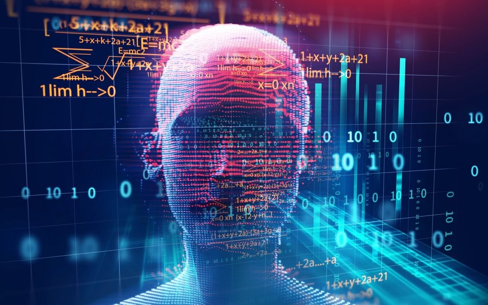

AI: Artificial intelligence
Es el campo científico de la informática que se centra en la creación de programas y mecanismos que pueden mostrar comportamientos considerados inteligentes. En otras palabras, la IA es el concepto según el cual “las máquinas piensan como seres humanos”.
Normalmente, un sistema de IA es capaz de analizar datos en grandes cantidades (big data), identificar patrones y tendencias y, por lo tanto, formular predicciones de forma automática, con rapidez y precisión. Para nosotros, lo importante es que la IA permite que nuestras experiencias cotidianas sean más inteligentes. ¿Cómo? Al integrar análisis predictivos y otras técnicas de IA en aplicaciones que utilizamos diariamente.